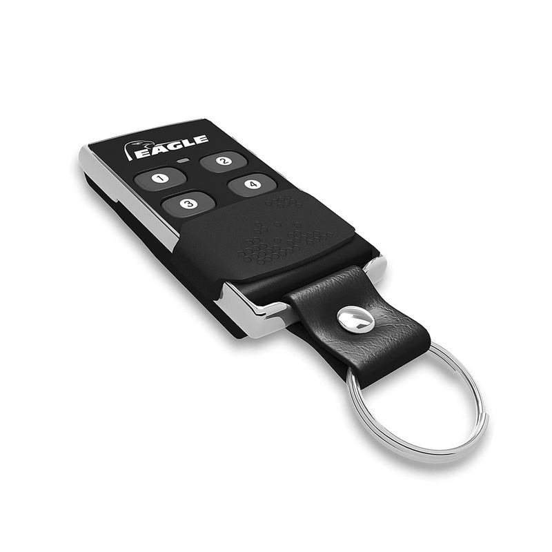
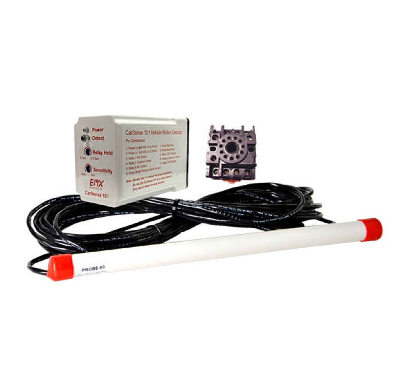
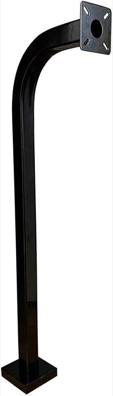

Phone control
EG380 Smart Wi-Fi Controller
Open, close and check the gate from anywhere with the free app; set schedules.
$229
Buy now
Guide
The opener moves the gate. Accessories decide who can open it, how, and how safely.
Several openers include accessories: the Eagle-1 comes with 2 remotes, a receiver and a photo eye, plus a free keypad; the Eagle-1000 FR and Eagle II come with a free keypad. Add only what's missing.
Eagle's Chrome Series remotes use rolling-code security and come as visor or keychain models with 1, 2 or 4 buttons, so a single remote can run more than one gate.
A wireless keypad lets people in with a code instead of a remote. Mount it on a pedestal at car-window height.
The EG380 opens and closes the gate from your phone, shows whether it was left open and keeps a history. It needs 2.4 GHz Wi-Fi reaching the gate.
A photo eye stops the gate closing on a vehicle that's halfway through. The Eagle-1 (above) and Eagle-2000-FR 1 HP include one in the box. Vehicle detection lets the gate react to a car without a remote: a loop detector senses cars over a loop cut into the driveway, and a direct-burial probe like the EMX CarSense 101 does it without cutting a loop.
All from Eagle's own range, so they work together.
Open, close and check the gate from anywhere with the free app; set schedules.

2-channel rolling-code keypad; works with EG650 and EG652 receivers.

Four buttons on one rolling-code remote that clips to the car visor.

A vehicle motion detector with a direct-burial probe – detection without cutting a loop into the driveway.

Senses vehicles over an in-ground loop. Multi-voltage, dual relay.

42" gooseneck pad-mount stand in powder-coated 1/8" steel for a keypad at car height.